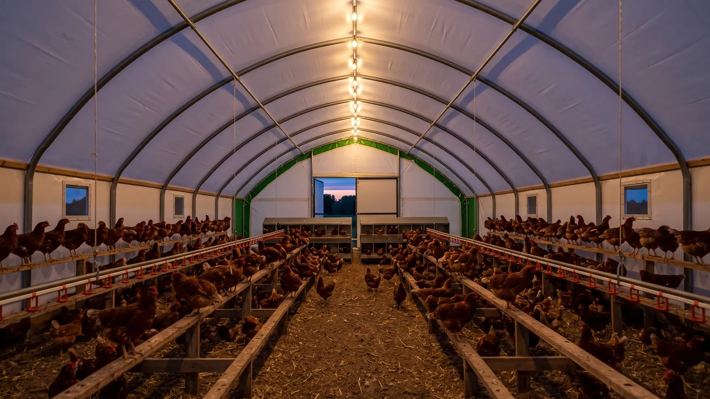

Kümes aydınlatması ve ışık programı ile verim
Yumurtayı tetikleyen yem değil, ışıktır. Kışın verim düşünce neyi nasıl ayarlayacağını, kaç saat aydınlık, kaç lüks ve hangi lambayla, sahadan anlatıyorum.

Kasım gelir, günler kısalır, bir bakarsın follukta her gün 90 yumurta bulurken sayı 60'a, 50'ye düşmüş. Yem aynı, tavuk aynı, hava fena değil. Ama sepet yarı boş. Köyde ilk akla gelen "soğuktan kesti" olur. Yanlış. Çoğu zaman tavuğu kesen soğuk değil, karanlıktır. Yumurtlama, tavuğun beynindeki bir bezin gözden gelen ışığa verdiği cevapla tetiklenir. Gün kısaldıkça ışık sinyali zayıflar, yumurtalık dinlenmeye geçer. Yani tavuk üşüdüğü için değil, günü kısaldığı için verimden düşer.
İyi haber: bu, düzeltebileceğin bir şey. Birkaç lamba, bir zamanlayıcı ve doğru bir programla kışın ortasında bile sürüyü çalışır tutabilirsin. Ama yanlış yaparsan, aynı ışıkla tavuğu tüketir, gagalatır, hatta yarkanı vaktinden önce bozarsın. Gel bu işi baştan, rakamıyla konuşalım.
Yumurtayı tetikleyen ışıktır, yem değil
Tavuğun kafatasında, gözden ve doğrudan kafatası kemiğinden geçen ışığı algılayan bir yapı var. Bu yapı "gün uzuyor" mesajını aldığında yumurtlama hormonlarını salgılatır. Doğada bu ilkbaharda olur; günler uzar, kuşlar üremeye geçer. Kümeste ise sen bu baharı yapay olarak taklit edersin. Tavuğun günde gördüğü toplam aydınlık süre 14-16 saat aralığındaysa yumurtalık tam kapasite çalışır. 12 saatin altına düştüğünde üretim yavaşlar; 10 saate inince çoğu sürü ciddi geriler.
Türkiye'nin çoğu yerinde aralık-ocakta gün ışığı 9-10 saate kadar iner. Yani hiçbir şey yapmazsan tavuğun 5-6 saat eksik ışık alır ve bunu yumurtadan keserek gösterir. Kışın verim çöküşünün ardındaki en büyük sebep budur. Diğer sebepleri de görmek istersen yumurta verimini düşüren kümes hatalarını ayrı yazdım; ama ışık, listenin en tepesindekidir.
Basit bir hesap: telefonundan ya da takvimden bölgenin bugünkü gün doğumu-gün batımı saatini bul, aradaki farkı çıkar. Diyelim 9,5 saat çıktı. Hedefin 15 saatse aradaki 5,5 saatlik açığı yapay ışıkla kapatacaksın demektir. Bunu bir günde değil, haftalara yayarak yapacağını unutma. Gün ilkbaharda kendiliğinden uzamaya başlayınca da yapay eklemeyi ona göre azaltır, tavuğu iki kaynaktan birden fazla uyarmazsın.
Kışın yumurta verimi için ışığı nasıl ekleyeceksin?
İşin özü basit: doğal günün kısaldığı kadarını yapay ışıkla tamamlarsın. Ama iki kritik kural var, bunları atlarsan ekleme yarar yerine zarar verir.
Birincisi, eklemeyi sabaha yap. Akşam ışık verip sonra birden söndürürsen tavuklar zifiri karanlıkta yerde kalır, tüneğe çıkamaz, panikler. Sabaha ışık koyarsan; mesela lambayı 04:30'da yakıp doğal gün ağarınca söndürürsen, akşam gün batımı doğal olur, tavuk tüneğine rahat çıkar. Çoğu üretici sabah eklemesini tercih eder, doğrusu da budur. İstersen sabah-akşam bölerek de verebilirsin ama akşam sönümü kademeli olmalı.
İkincisi, süreyi kademeli artır. En sık yapılan hata, bir günde 9 saatten 16 saate zıplamaktır. Bu, tavuğun sistemini şoke eder; bazıları verir, ama tüy döker, strese girer, hatta yolar. Doğrusu haftada yarım-bir saat ekleyerek hedef süreye yavaşça çıkmaktır. Aşağıdaki tabloyu kendi bölgenin gün uzunluğuna göre kaydırarak kullanabilirsin.
| Hafta | Toplam aydınlık (doğal + yapay) | Uygulama |
|---|---|---|
| 1. hafta | 11 saat | Sabah 1 saat ek ışık |
| 2. hafta | 12 saat | Sabah eklemeyi 30 dk uzat |
| 3. hafta | 13 saat | Sürü ısınıyor, verim toparlar |
| 4. hafta | 14 saat | Hedef bandın alt sınırı |
| 5-6. hafta | 15-16 saat | Tam verim; bu bandı sabit tut |
Hangi kümes lambası? LED, renk ve şiddet
Lamba seçimi köyde en çok yanlış yapılan yer. Herkesin aklına "ne kadar parlaksa o kadar iyi" gelir. Tam tersi. Aşırı parlak ışık tavuğu huzursuz eder, kanı ve kırmızı dokuyu belirginleştirir, doğrudan gagalama ve kanibalizmi tetikler. Yumurtacı bir kümeste gereken şiddet sandığından çok az: yaklaşık 10-20 lüks yeterlidir. Bu, içeride rahat gazete okuyabileceğin ama göz kamaştırmayan bir aydınlık demektir.
Lamba tercihinde bugün akıllısı LED. Az elektrik çeker, uzun ömürlüdür, kısılabilir (dimmer) modelleri vardır. Renk sıcaklığında sıcak beyaz (2700-3000K) tercih et; tavuk sıcak/kırmızıya yakın tonlarda daha sakindir. Soğuk mavi-beyaz endüstriyel ışık sürüyü gerer. Birkaç pratik ölçü:
- Ampulleri yere değil, tavuğun göz hizasının biraz üstüne, eşit dağıtacak şekilde yerleştir. Bir köşe göz kamaştırırken diğer köşe zifiriyse tavuk aydınlık tarafa yığılır.
- 10 m² bir bölme için 1-2 adet 6-9 W sıcak beyaz LED çoğunlukla yeter. Çok değil, dengeli dağıt.
- Ampulü toz ve amonyaktan koru; kirli ampul yarı yarıya ışık kaybeder. Ara sıra silmek, yeni lamba almaktan ucuz.
- Kısılabilir sürücü varsa akşam sönümünü 15-20 dakikaya yayabilirsin. Bu, gün batımı taklididir ve tavuğun tüneğe çıkmasını sağlar.
Işık düzenini kurarken kümesin yalıtımını ve havasını da unutma; kışın sıcak tutmak için kümesi tıkabasa kapatan çok kişi ışık kadar havayı da bozuyor. O dengeyi kışın kümes nasıl sıcak tutulur yazısında ayrı anlattım.
Zamanlayıcı olmadan bu işi kotaramazsın
Sabah 04:30'da kalkıp lamba yakacak, gün ağarınca söndürecek adam azdır; birkaç gün yaparsın, sonra aksar, program bozulur, sürü şaşar. Bu yüzden basit bir dijital zamanlayıcı (timer) al. Ucuzdur, prize takılır, yak-söndür saatlerini kurarsın, gerisini kendi halleder. Elektrik kesintisi çok olan köyde bataryalı hafızalı model seç, yoksa her kesintide saat sıfırlanır.
Sürüyü büyütmeyi düşünüyorsan otomatik kapı, otomatik yemleme ve zamanlayıcılı aydınlatmayı bir arada kurmak işini ciddi hafifletir; kümes otomasyonu ve otomatik sistemler yazısında neyin gerçekten gerekli olduğunu ayırdım. Ama en küçük sürüde bile bir zamanlayıcı, ışık programının bel kemiğidir.
Zamanlayıcıyı kurarken bir de mevsim geçişini planına yaz. Kâğıda ya da telefonuna "her pazar sabah ışığını 15 dakika öne al" gibi bir not düş; yoksa hafta hafta artışı gözden kaçırır, sürüyü sabit sürede tutup kademeli çıkışı ıskalarsın. İlkbaharda gün uzayınca ters yönde, yani yapay ışığı yavaşça geri çekerek doğal güne devredersin. Bu küçük disiplin, pahalı hiçbir ekipmanın yapamayacağı kadar iş görür.
Yarkada erken ışık büyük hata
Şimdi çok önemli bir uyarı. Işık verimi tetikler diye "o zaman genç piliçlere erken ışık verip erken yumurtaya başlatayım" düşüncesi çok yaygın ve çok zararlı. Yarka (henüz yumurtaya başlamamış genç dişi) yeterince gelişmeden, kemik ve vücut ağırlığı oturmadan ışıkla uyarılırsa erken yumurtaya başlar. Sonucu şu olur: küçük yumurtalar, sarkık ve zorlanan bir üreme sistemi, kloak sorunları, kısa verim ömrü. Kazanmış gibi görünürsün ama tavuğu baştan yakmış olursun.
Doğrusu, yarkanın ışık uyarısını 16-18 haftadan önce artırmamaktır; ırka ve gelişime göre bu değişir. O yaşa kadar günü sabit ve kısa tut, sonra kademeli artışa geç. Yarka alırken yaşını ve gelişimini nasıl kontrol edeceğini yarka alırken dikkat edilecekler yazısında yazdım; ışık programını da bu yaşa göre kurarsın.
Işık iyi de barınak sızdırıyorsa boşuna
Programı kurdun, lambayı astın, zamanlayıcıyı ayarladın. Ama kümesin dört bir yanı sızdırıyorsa, sabahın köründe yaktığın ışık işe yarar, gündüz ise soğuk ve nem tavuğu ayrı yorar. Işık verimi tetikler, fakat o verimi ancak sürüyü strese sokmayan, kışın kavurmayan-üşütmeyen bir barınak gerçeğe çevirir. Yalıtımı zayıf tek katlı bir sacın altında ne kadar ışık versen de tavuk enerjisini ısınmaya harcar, yumurtaya değil.

750 Tavukluk Tavuk Çadırı
Işık programını kurdun ama barınak kışın buz, yazın fırın gibiyse verim gene kaçar; 750 tavukluk Tavuk Çadırı, 3-4 kat yalıtımlı brandasıyla iç sıcaklığı dengede tutar, aydınlatmayla kazandığın verimi soğuğa kaptırmaz, 81 ilde anahtar teslim kurulur.
Kışın kapalı tutulan kümeste bir de kabuk kalitesi bozulabilir; ışık ve dinlenme düzeni oturmuşsa ama kabuklar hâlâ inceyse mesele kalsiyum-D vitamini tarafındadır, onu yumurta kabuğu neden inceliyor yazısında ele aldım.
Işıkla verimi zorlarken tavuğu tüketme
Son bir denge sözü. Işık güçlü bir araç ama bıçak gibi; doğru kullanınca kışın sepetini doldurur, yanlış kullanınca tavuğu erkenden bitirir. 16 saati aşıp sürüyü hiç dinlendirmeden çalıştıran, ikinci yıl "tavuğum niye erken kesildi" diye şaşırır. Verim ömrünü uzun tutmanın yollarını yumurtacı tavuk kaç yıl yumurtlar yazısında anlattım; ışık disiplini bunun tam ortasındadır.
Pratikte şunu yap: sonbaharda günler kısalmaya başlar başlamaz, verim daha düşmeden sabah ışığını devreye al, haftada yarım saat artırarak 14-16 banda çık, sıcak beyaz ve loş tut, akşamı zamanlayıcıyla yumuşat, 8 saat karanlığı bırak. Bunu bir kez oturttuğunda, komşunun tavukları kışın keserken senin sepetin dolu kalır. İşin sırrı pahalı ekipmanda değil; ışığı ne zaman, ne kadar ve nasıl verdiğini bilmekte.
Sık sorulanlar
Tavuklara günde kaç saat ışık gerekir?
Kışın yumurta verimi neden düşer, ışıkla düzelir mi?
Kümes lambası hangi renk ve kaç watt olmalı?
Işığı sabah mı akşam mı vermeli?
Işık süresini birden artırmak zararlı mı?
Yarkalara erken ışık verip erken yumurtlatmak iyi mi?
Projenizi birlikte planlayalım
Kapasitenizi ve bölgenizi yazın; ölçü ve teklifi birlikte çıkaralım.
Kapasitenizi yazın